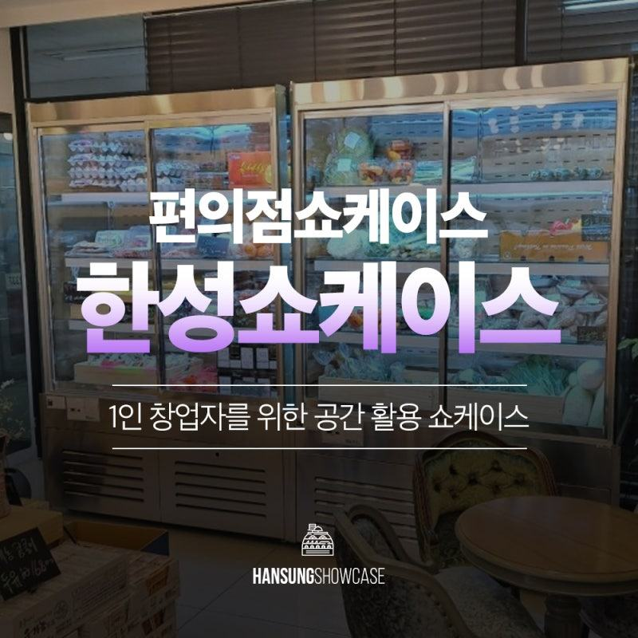
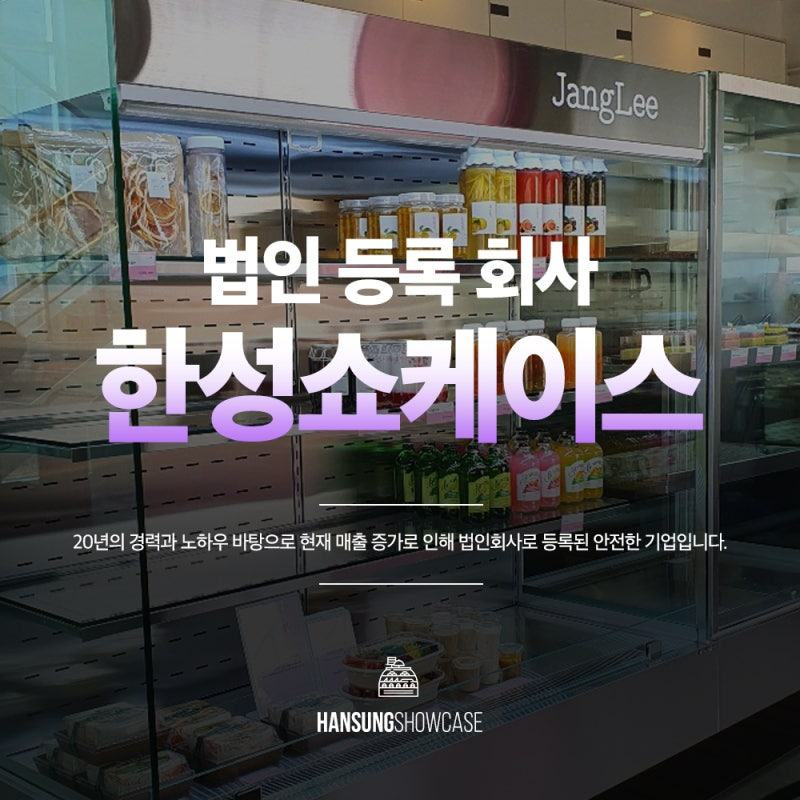

한성제품
편의점 쇼케이스 배치, 손님 동선을 따라 정하는 법

편의점 쇼케이스는 손님이 많이 찾는 음료·유제품 냉장고를 매장 안쪽 벽면에 두어 다른 진열대를 지나가게 만드는 배치가 기본입니다. 작은 매장일수록 규격품을 억지로 넣기보다 벽 폭에 맞춘 크기로 통로와 보충 공간을 함께 확보하는 것이 중요합니다.
안녕하세요. 편의점과 동네 마트에 맞춤 냉장 진열장을 납품하는 한성쇼케이스입니다.
편의점을 준비하시는 사장님들이 도면을 보며 가장 오래 고민하시는 부분이 냉장 쇼케이스 위치입니다. 상품 수는 많은데 매장은 좁고, 쇼케이스는 한 번 놓으면 옮기기 어렵다 보니 처음 자리가 매장 운영 내내 영향을 줍니다.
특히 1인 창업이나 작은 임대 공간에서는 같은 규격의 기성 쇼케이스가 벽 폭과 맞지 않아 애매하게 남는 공간이 생기기 쉽습니다.
오늘은 손님 동선과 사장님 작업 동선을 함께 놓고 쇼케이스 배치를 정하는 기준을 정리해 보겠습니다.
1. 음료 냉장고는 안쪽 벽으로
편의점 손님 상당수는 음료나 우유 같은 냉장 상품을 사러 들어옵니다. 이 쇼케이스를 입구 가까이 두면 손님이 음료만 집고 바로 계산대로 가지만, 매장 가장 안쪽 벽면에 두면 그 사이 과자, 라면, 생활용품 진열대를 자연스럽게 지나가게 됩니다.
다만 안쪽 벽에 두더라도 입구에서 냉장고 조명이 보여야 손님이 길을 찾습니다. 문 쪽에서 바라봤을 때 쇼케이스가 진열대에 가려지지 않는지 꼭 확인해 보세요.
아이스크림이나 냉동식품 쇼케이스는 음료 냉장고와 가까이 두되 통로 한쪽으로 모아 두는 편이 좋습니다.
손님이 냉장·냉동 상품을 한 구역에서 함께 고르면 계산 직전까지 상품이 녹거나 미지근해질 시간이 줄어듭니다.
- 입구에서 냉장 쇼케이스 조명이 보이는지 확인하세요.
- 냉장 구역까지 가는 길에 주력 상품을 배치해 보세요.
2. 통로 폭과 문 여는 공간
유리문형 쇼케이스는 문이 열리는 반경만큼 앞 공간이 필요합니다. 통로가 좁으면 한 손님이 문을 열고 고르는 동안 다른 손님이 지나가지 못하고, 아예 그 앞을 피해 가게 됩니다.
작은 매장이라면 문 폭을 줄여 여러 짝으로 나누거나, 회전이 빠른 상품 구역은 문 없는 오픈형으로 두는 방법도 있습니다.
매장 폭에 맞춰 문 짝 수와 크기를 정할 수 있는 것이 맞춤 제작의 장점입니다.
문 앞 바닥에 물기가 생기기 쉬운 자리라면 미끄럼 방지 매트 자리까지 생각해 두세요. 쇼케이스 앞은 손님이 가장 오래 멈춰 서는 곳이라 바닥 상태가 매장 인상에 그대로 남습니다.


3. 보충 동선은 손님 동선과 겹치지 않게
편의점은 하루에도 여러 번 음료와 유제품을 채웁니다. 창고에서 쇼케이스까지 박스를 들고 가는 길이 손님 통로 한가운데를 지나면 영업 중 보충이 번거로워집니다.
뒤쪽에서 채우는 워크인 방식이 어려운 매장이라도, 창고 출입문과 냉장 구역을 가깝게 두는 것만으로 보충 시간이 줄어듭니다.
유통기한이 짧은 상품은 앞으로 당겨 진열하기 쉬운 선반 깊이인지도 함께 보세요.
- 창고 문과 냉장 구역 거리를 짧게 잡으세요.
- 선반 깊이가 선입선출 진열에 맞는지 확인하세요.
4. 계산대 주변 작은 쇼케이스
계산대 옆은 손님이 줄을 서며 잠깐 머무는 자리입니다. 여기에 낮은 미니 쇼케이스를 두고 디저트나 소용량 음료를 진열하면 마지막에 하나 더 집는 구매가 일어나기 좋습니다.
단, 계산대 업무 공간을 침범하면 결제 동선이 불편해지니 카운터 높이와 폭에 맞춘 크기로 정하셔야 합니다.
기계실 열이 사장님 쪽으로 나오지 않도록 배기 방향도 확인해 보세요.
체크리스트
- 입구에서 냉장 구역이 보이는지
- 유리문 개방 반경과 통로 폭
- 창고와 냉장 구역 거리
- 선입선출이 쉬운 선반 깊이
- 계산대 옆 미니 쇼케이스 공간
현장에서 자주 보는 경우: 작은 편의점에 규격품이 맞지 않을 때
1인 창업이나 작은 공간에서 편의점을 여시는 사장님들이 많아지면서, 같은 규격으로 만들어진 쇼케이스가 매장에 비해 너무 크거나 벽 폭과 맞지 않아 고민하시는 경우를 자주 봅니다.
어쩔 수 없이 규격품을 넣으면 공간이 남거나 원하는 인테리어를 포기하게 됩니다.
그래서 저희는 편의점 쇼케이스를 매장 크기와 디자인에 맞춰 맞춤 제작으로 진행합니다. 좁은 공간에 큰 냉장고를 넣어 공간을 버리지 않고, 직접 제조하기 때문에 판매 후 A/S까지 책임지고 관리할 수 있습니다.


자주 묻는 질문
편의점 냉장 쇼케이스는 몇 짝으로 하는 게 좋나요?
매장 벽 폭과 취급 상품 구성에 따라 달라집니다. 음료, 유제품, 간편식처럼 온도 관리가 다른 상품군을 나눠 생각하시면 짝 수를 정하기 쉽습니다.
기둥이나 단차가 있는 벽에도 설치할 수 있나요?
맞춤 제작이라 기둥 위치나 벽 단차에 맞춰 폭과 높이를 조정할 수 있습니다. 실측 치수와 사진을 보내 주시면 배치안을 함께 검토해 드립니다.
설치 후 고장이 나면 어떻게 하나요?
한성쇼케이스는 전국 240여 개 A/S 센터를 통해 설치 이후 관리를 지원합니다. 증상이 생기면 대표전화 031-986-2458로 접수해 주세요.
매장 조건에 맞춰 만드는 한성쇼케이스
원하시는 제품 사진과 설치할 공간 사진만 보내 주셔도 매장에 맞는 구성을 추천해 드립니다.
- 전국 240여 개 A/S 전담 센터 운영
- 본사 대량 자재 매입으로 품질 대비 합리적인 가격
- 유럽제·삼성 냉각 콤프레셔 적용
- 국내 최초 쇼케이스 전문 디자이너 상주
매장 폭과 원하는 진열 구성을 알려 주세요. 실측과 견적을 안내해 드립니다.
031-986-2458